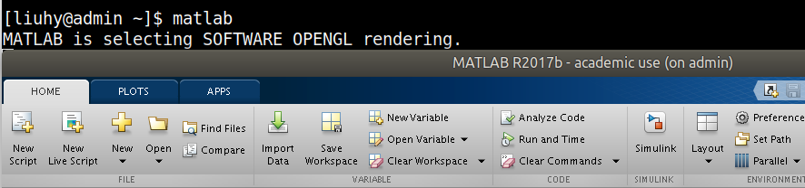
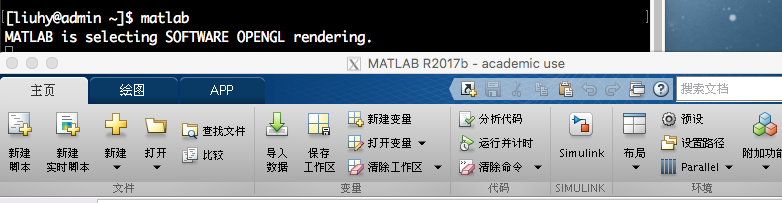
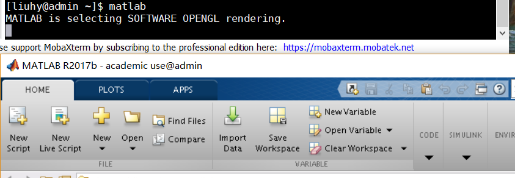
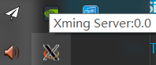
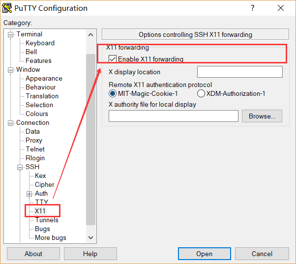

使用图形界面通常情况下，在集群中我们都在命令行中操作。但是有时我们需要打开某些软件的图形 界面，此时我们需要借助 X11 转发。 注意：在网络不好的时候请谨慎使用此功能，此时经过 X11 转发的界面操作起来有 明显卡顿。尽量在校内有线网或信号较好的无线网的环境下使用。 Linux在 Linux 环境中启用 X11 转发非常简单，只需要在登录时加入 -X 参数。 liuhy@laptop: $ ssh -X user@server_ip 此后登录集群可以直接输入命令开启图形界面的程序。例如 [liuhy@admin ~]$ matlab MATLAB is selecting SOFTWARE OPENGL rendering.  MacOS使用 MacOS 系统时需要安装第三方支持 X11 的软件 XQuartz。官网地址>> 安装完毕后，在登录集群时加入 -X 参数。 liuhy@laptop: $ ssh -X user@server_ip 此后登录集群可以直接输入命令开启图形界面的程序。  Windows使用 MobaXterm推荐使用 MobaXterm 客户端进行连接。官网地址>> 在默认情况下 MobaXterm 会自动打开 X11 的转发，因此只需正常登录然后直接输入 打开软件的命令即可。  注：使用 Xshell 系列的用户需要额外下载 Xmanager。 使用 PuTTY 配合 XmingPuTTY 用户可配合 Xming 软件完成 X11 的转发。 首先下载 Xming。下载地址>> 安装完成后双击 Xming.exe 打开 Xming 的 Xserver，此时会在系统任务栏的 右下角看到 Xming 正在运行。  然后打开 PuTTY 客户端，选择服务器的相应 Session 配置，点击 Load 载入这个配置。 在左边面板选择 SSH -> X11，在右边勾选 Enable X11 Forwarding。 最后回到 Session 界面点击保存即可。  |